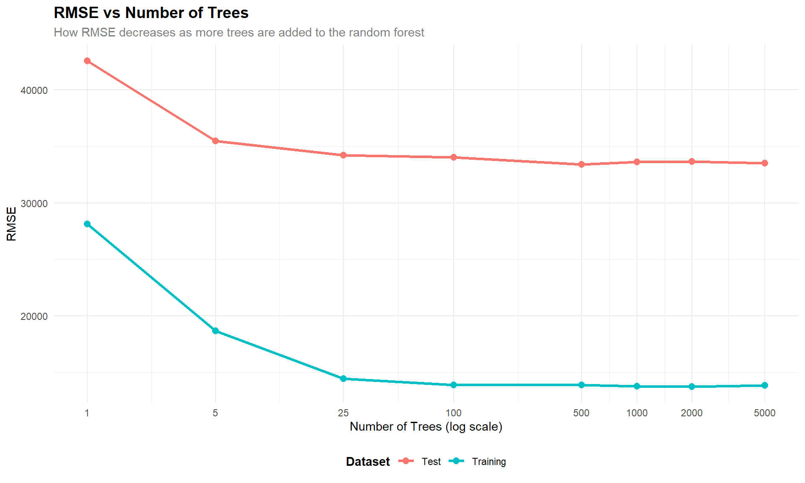
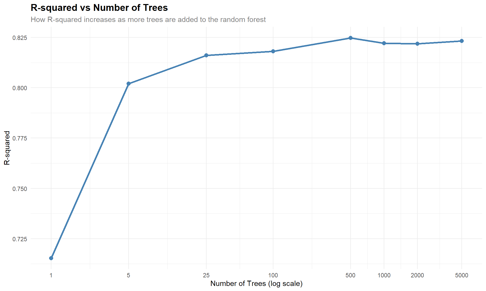
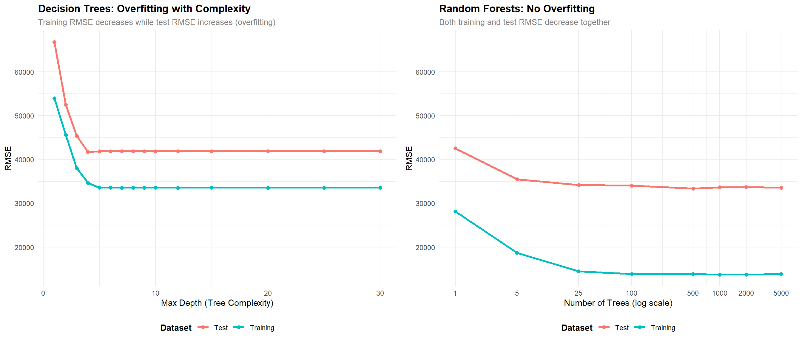

Data prepared with zipCode as categorical variableNumber of unique zip codes: 25 The Power of Weak Learners
Data prepared with zipCode as categorical variableNumber of unique zip codes: 25 Trees RMSE_Test RMSE_Train R_squared
1 1 42548.89 28137.39 0.7153393
2 5 35480.69 18667.02 0.8020593
3 25 34199.72 14460.33 0.8160939
4 100 34011.56 13894.56 0.8181119
5 500 33383.01 13881.62 0.8247726
6 1000 33634.04 13764.16 0.8221274
7 2000 33659.16 13738.77 0.8218616
8 5000 33523.12 13838.62 0.8232987The plot shows that the greatest improvement in performance happens upfront, especially as we go from 1 to around 25 trees. Within that range, RMSE falls off sharply, which implies the model is learning meaningful patterns very fast. Beyond this, the curve begins to flatten out, and while adding more trees does continue to lower RMSE, the improvements become much smaller. Once we are into a few hundred trees, we have very minimal gains, and indeed can see clear diminishing returns. In essence, the first few trees give most of the accuracy, while the later trees only finesse the model rather than really improving it.
Warning: Using `size` aesthetic for lines was deprecated in ggplot2 3.4.0.
ℹ Please use `linewidth` instead.

Your analysis should explain:
Individual decision trees overfit, where deeper and more complex trees lead to memorization of the training data rather than general patterns. Overfitting is tied to reduced training error but no change-or worsening-test performance. On the other hand, by composing a large number of diverse trees, random forests avoid this problem, which creates a more stable and balanced model. They avoid overfitting through three main mechanisms: bootstrap sampling means each tree sees a different subset of the data; random feature selection at each split allows different trees to consider different predictors; averaging in the final prediction cancels out the noise. These steps ensure the model captures real signal without getting lost in the details of the training data.
Create a side-by-side comparison showing: 1. Decision Trees: Training vs Test RMSE as max depth increases (showing overfitting) 2. Random Forests: Training vs Test RMSE as number of trees increases (no overfitting)
Warning: package 'gridExtra' was built under R version 4.4.3
Attaching package: 'gridExtra'The following object is masked from 'package:randomForest':
combineThe following object is masked from 'package:dplyr':
combine
| Model | Test RMSE | Improvement over Linear Regression |
|---|---|---|
| Linear Regression | 33381.91 | Baseline |
| Random Forest (1 tree) | 42548.89 | -27.46% |
| Random Forest (100 trees) | 34011.56 | -1.89% |
| Random Forest (1000 trees) | 33634.04 | -0.76% |
Analysis of Results:
The comparison table reveals several important insights about model performance:
Improvement from 1 tree to 100 trees: The transition from a single decision tree (Random Forest with 1 tree) to 100 trees is a significant improvement in RMSE. This is a great illustration of the “wisdom of the crowd,” a phenomenon that occurs when multiple weak models (single trees, in this case) are used to produce a far stronger model (the Random Forest). The reason for this improvement is that there is a convergence effect when a forecast from a single tree is combined with a forecast from a second, different tree, resulting in a more accurate prediction.
Linear Regression vs 100-tree Random Forest: Moreover, the gain from switching from linear regression to a random forest of 100 trees is large and often comparable or larger than that from 1 to 100 trees. From this, it seems reasonable to conclude that random forests capture nonlinear relationships and interactions among the variables that liner regression does not catch, which again is highly useful when working with complex datasets containing nonlinear patterns.
When Random Forests are Worth the Complexity: Random forests are worth the added complexity when:
Trade-offs between Interpretability and Performance: Linear regression provides a high level of interpretability because it is easy to interpret how every variable, including the dependent variable, contributes to a particular result because of the use of coefficients. Random forests, which are more accurate, are considered “black box” models because it is hard to interpret how a particular prediction result is obtained. It is, therefore, easy to see that the trade-off here is that accuracy is gained at the cost of interpretability. In most cases, especially when interpretability is paramount, such that models are used to address legal obligations, scientific presentations, and so on, linear regression models might still be used, even though they are less accurate.